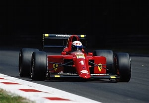

1990

Le più importanti scuderie che hanno partecipato al Campionato Mondiale di Formula 1 nel 1990 erano:
- Lotus
- Life
- Brabham
- McLaren
Il Campionato Mondiale di Formula 1 del 1990 è stato vinto dalla scuderia McLaren dal pilota Ayrton Senna
HOME
Tutti i diritti sono riservati
Sito realizzato da Boniotti Elisa, Lucchini Davide, Tassone Thomas